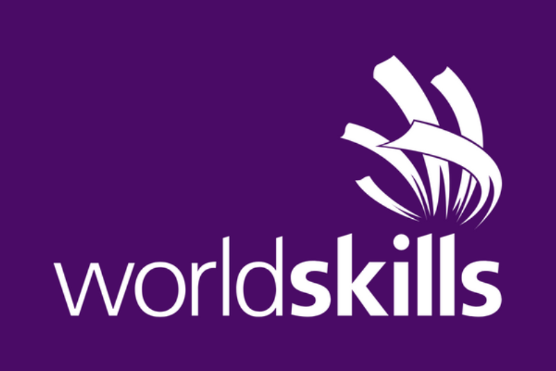
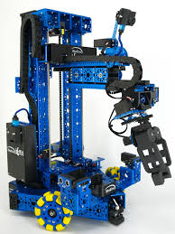

Robótica 🤖
Meu tópico favorito são projetos robóticos para competições, como o famoso "World Skills", onde as equipes de robótica competem com suas criações em diversas categorias.

World Skills
World Skills é uma das maiores competições de habilidades profissionais do mundo, onde robótica tem um papel central. Aqui, equipes do mundo inteiro se enfrentam com robôs criados para diversas tarefas, testando inovação e capacidade técnica.

Por que a Robótica é Meu Tópico Favorito?
- A robótica desafia a criatividade e habilidades em ciência e engenharia.
- É uma forma de aplicar a teoria de maneira prática, criando soluções reais para problemas complexos.
- Participar de competições como o World Skills traz uma sensação incrível de realização e aprendizado.
Meus 3 Projetos Robóticos Favoritos
- Robô autônomo que resolve labirintos.
- Braço robótico controlado por inteligência artificial.
- Drone com sistema de navegação por GPS e câmeras de alta definição.
Quer saber mais sobre o mundo da robótica e competições? Confira este link oficial do World Skills.